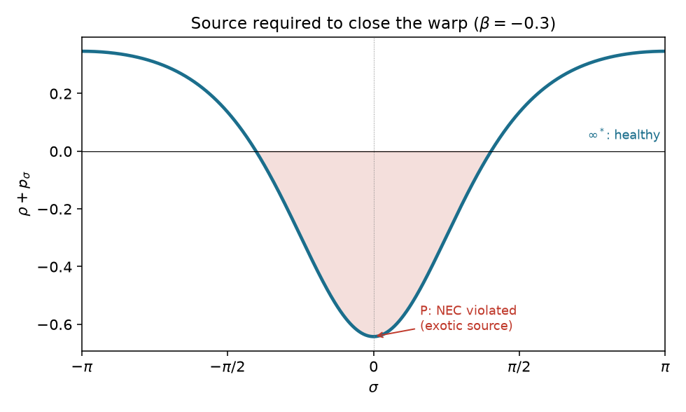
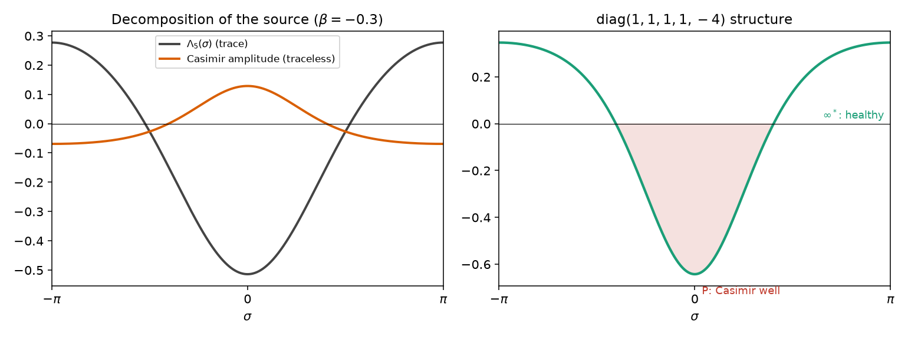
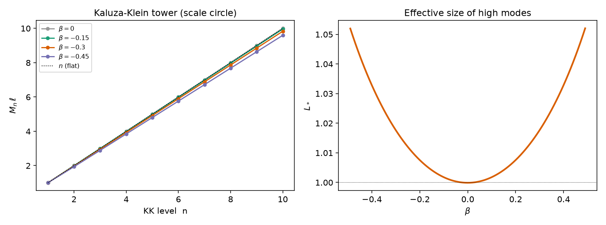
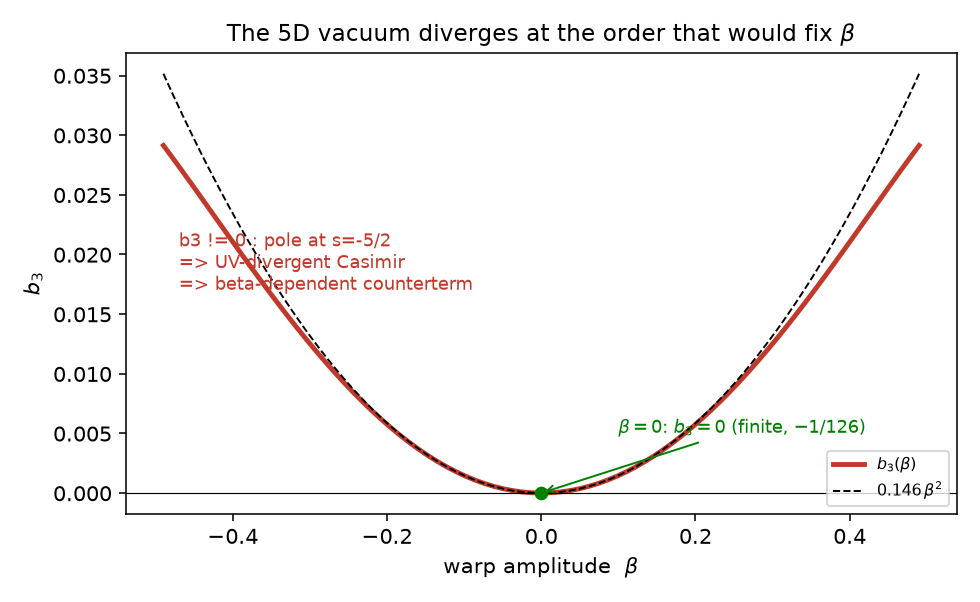
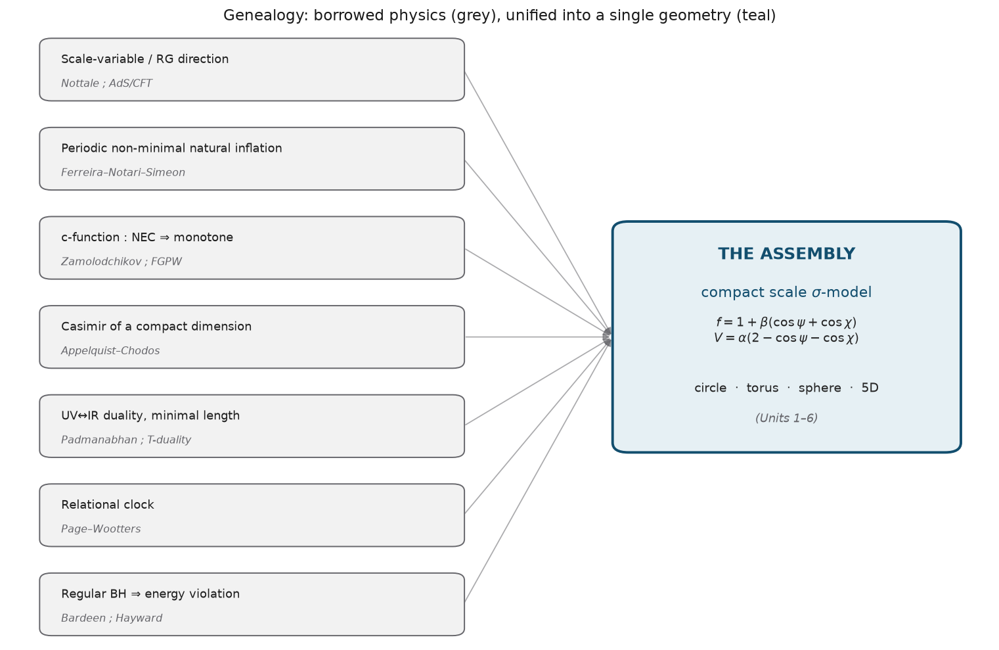
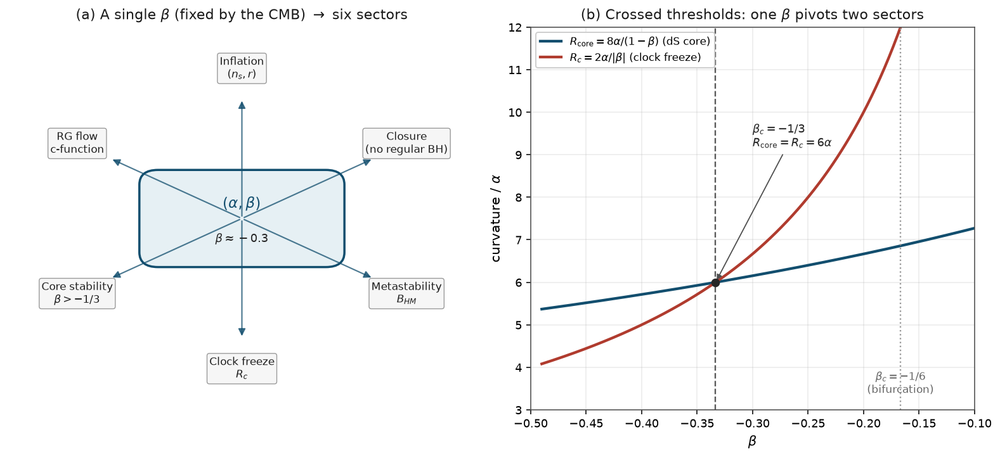
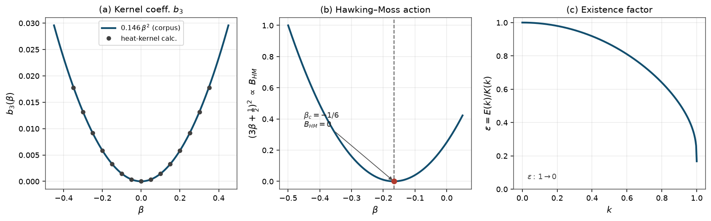

Unité 6 — Une origine 5D de la dualité d'échelle : une cinquième dimension d'espace-temps compactifiée
Unité 6 · Origine 5D de la dualité d’échelle :
une cinquième dimension d’échelle espace-temporelle
compactifiée
Ce que le plongement à cinq dimensions engendre, et ce qu’il ne peut pas prédire
Hassane Bakkaoui
Chercheur indépendant · bakkahassa@hotmail.com ·
PRÉPRINT (hep-th / gr-qc) · juin 2026
Note liminaire. Cette unité explore un choix géométrique délibérément contraire à celui du corpus, dans le seul but de tester si l’action de dualité d’échelle possède une origine dimensionnelle. Le verdict est mixte et nous le consignons tel quel : le plongement est remarquablement génératif, mais il n’améliore pas le pouvoir prédictif du cadre et, sur un point précis (la tenue ultraviolette du vide), il est moins bien comporté que la formulation \(\sigma\)-modèle d’origine. La formalisation a été conduite en dialogue avec des systèmes d’assistance analytique, sous la direction de l’auteur, à qui revient l’entière responsabilité du contenu scientifique.
Introduction : comment et pourquoi une cinquième dimension d’échelle
Le choix du corpus, et son contraire
Le corpus (Unités 1–3) repose sur une hypothèse : l’axe d’échelle logarithmique \(u=\ln(\lambda/\ell_P)\), habituellement non compact, est en réalité un cercle, via la projection \(\psi=2\arctan u\in(-\pi,\pi]\), qui identifie le pôle de Planck (\(\psi=0\), noté \(P\)) et un pôle « unifié » (\(\psi=\pm\pi\) identifiés, noté \(\infty^{*}\)). Un point y est capital : ces cercles d’échelle sont des cibles internes d’un modèle sigma euclidien, non des dimensions de l’espace-temps. C’est le résultat F2 : \(\chi\) n’étant pas une coordonnée de genre temps, il n’y a ni fantôme ni courbe temporelle fermée.
La question de cette unité est le choix opposé. Et si l’on prenait l’axe d’échelle au pied de la lettre, comme une véritable cinquième dimension de l’espace-temps ? Ce choix est plus audacieux : il rouvre la question des fantômes et des CTC que F2 fermait par postulat. Mais il offre une contrepartie possible : si l’action du corpus descend d’une géométrie 5D par réduction dimensionnelle, alors sa forme particulière (le couplage non minimal verrouillé, le potentiel borné) cesse d’être un choix pour devenir une conséquence.
Pourquoi « espace-temporelle » : le verrouillage relativiste
Le corpus possède deux axes d’échelle : un axe spatial \(\psi\) et un axe temporel \(\chi\). Une cinquième dimension est unique. Pour qu’une seule dimension porte à la fois l’échelle spatiale et l’échelle temporelle, il faut que ces deux échelles soient verrouillées : c’est le verrouillage relativiste \(\tau=\lambda/c\), soit un exposant dynamique \(z=1\). Sous ce verrouillage, les deux axes \(\psi\) et \(\chi\) se rabattent sur une unique coordonnée diagonale, notée \(\sigma\).
dictionnaire avec les Unités 2–3 Dans cette unité, \(\beta\) désigne l’amplitude du couplage non minimal 5D le long de l’axe diagonal \(\sigma\). Sous l’identification \(\sigma\leftrightarrow(\psi=\chi)\), il coïncide avec le couplage non minimal diagonal du corpus, soit le double du couplage par axe. Le seuil de clôture diagonal \(\beta_c^{\mathrm{diag}}=-1/3\) correspond au seuil par axe \(-1/6\) des Unités 2–3.
L’ancrage géométrique : l’échelle comme direction holographique
Une métrique 5D gauchie le long de la coordonnée d’échelle, \[\begin{equation} \label{eq:metric} ds_5^2 \;=\; a(\sigma)^2\,\eta_{\mu\nu}\,dx^\mu dx^\nu \;+\; \ell^2\,d\sigma^2, \qquad \mu,\nu=0,1,2,3, \end{equation}\] prend, pour le choix exponentiel \(a(\sigma)=e^{\sigma/\ell}\), la forme exacte de l’espace anti-de Sitter AdS\(_5\) en coordonnées de Poincaré. Or, dans la correspondance AdS/CFT, la coordonnée radiale de AdS\(_5\) est l’échelle d’énergie de la théorie de bord, c’est-à-dire la direction du groupe de renormalisation.
Cadre formel : métrique gauchie et réduction de Kaluza–Klein
arène 5D L’espace-temps fondamental est \(\mathcal{M}_5=\mathcal{M}_{3+1}\times S^1_\sigma\), où \(S^1_\sigma\) est le cercle d’échelle (période \(2\pi\)), \(\sigma=0\equiv P\), \(\sigma=\pm\pi\equiv\infty^{*}\). La coordonnée \(\sigma\) est de genre espace (\(g_{\sigma\sigma}=+\ell^2\)), seul choix compatible avec l’absence de fantôme.
▪ preuve (vérifié par calcul formel) Pour la métrique [eq:metric], les composantes non nulles du tenseur d’Einstein 5D sont, en notant \('=d/d\sigma\) et \(\ell=1\), \[\begin{equation} \label{eq:einstein} G^t_{\ t}=G^x_{\ x}=3\!\left(\frac{a''}{a}+\frac{a'^2}{a^2}\right), \qquad G^\sigma_{\ \sigma}=6\,\frac{a'^2}{a^2}, \qquad R_5=-8\frac{a''}{a}-12\frac{a'^2}{a^2}. \end{equation}\] La réduction de l’action d’Einstein–Hilbert 5D sur le cercle produit, dans le repère de Jordan 4D, un système tenseur-scalaire dont le couplage non minimal est le carré du warp, \[\begin{equation} \label{eq:fa2} f(\sigma)=a(\sigma)^2\qquad\text{(gravité induite par le gauchissement).} \end{equation}\]
Propriétés géométriques générales
AdS\(_5\) et l’isométrie de dilatation
▪ preuve Dans la région courante, le warp exponentiel \(a(\sigma)=e^{\sigma/\ell}\) donne \[\begin{equation} \label{eq:ads} ds_5^2=e^{2\sigma/\ell}\,\eta_{\mu\nu}dx^\mu dx^\nu+\ell^2 d\sigma^2,\qquad R_5=-\frac{20}{\ell^2}\ \ \text{(constant)}, \end{equation}\] soit exactement l’espace anti-de Sitter AdS\(_5\) de rayon \(\ell\). Le décalage \(\sigma\to\sigma+\lambda_0\ell,\ x^\mu\to e^{-\lambda_0}x^\mu\) laisse \(ds_5^2\) invariant : c’est la dilatation, dont \(\partial_\sigma\) est le vecteur de Killing. ▪ à vérifier la coordonnée d’échelle \(\sigma\) est alors la direction radiale / holographique d’AdS.
L’involution de dualité : un miroir d’échelle
▪ preuve L’application \(\mathcal{D}:\sigma\to-\sigma\), soit \(\lambda\to\ell_P^2/\lambda\), échange ultraviolet et infrarouge — l’analogue de la T-dualité des cordes. Ses points fixes sont exactement \(\sigma=0\) (\(P\)) et \(\sigma=\pi\) (\(\infty^{*}\)).
La compacité brise la dilatation — et c’est un atout
▪ preuve Un warp périodique ne peut être l’exponentielle exacte [eq:ads] : la périodicité force la forme bornée \(a^2=1+\beta\cos\sigma\) et brise donc l’isométrie de dilatation exacte. Cette brisure est précisément ce qui engendre une hiérarchie d’échelles entre \(P\) et \(\infty^{*}\).
Tour de Kaluza–Klein et origine candidate de l’horloge (pont vers l’Unité 1)
▪ conjecture La dimension supplémentaire étant un cercle, tout champ y possède un spectre discret (Fig. 3) : mode zéro \(=\) physique 4D, modes massifs quantifiés par \(1/\ell\). Cette discrétude est le candidat géométrique à l’origine de l’horloge intermittente de l’Unité 1 : l’oscillation dans la direction compacte \(\sigma\) jouerait le rôle du pendule dont la moyenne donne le facteur d’existence \(\varepsilon=E(k)/K(k)\). La cohérence d’échelle est encourageante, mais ce n’est pas une dérivation. ▪ ouvert
Le contenu génératif
Forme trigonométrique imposée par la compacité
▪ preuve La coordonnée \(\sigma\) étant un angle compact, \(f(\sigma)\) doit être \(2\pi\)-périodique ; l’invariance sous l’involution de dualité \(\mathrm{D}:\sigma\to-\sigma\) impose la parité. La forme non triviale de plus basse harmonique est donc \[\begin{equation} \label{eq:ftrig} f(\sigma)=1+\beta\cos\sigma,\qquad a(\sigma)=\sqrt{1+\beta\cos\sigma}, \end{equation}\] avec \(f(P)=1+\beta\) (vrai vide) et \(f(\infty^{*})=1-\beta\) (faux vide). La positivité \(f>0\) exige \(|\beta|<1\).
Verrouillage \(V\)–\(f\) : le potentiel borné descend du warp
▪ preuve On cherche le potentiel 4D le plus simple compatible avec la compacité : périodique, affine en \(f\), et s’annulant au vrai vide, \(V(P)=0\). Écrivant \(V=A+Bf\) et imposant \(V(P)=A+B(1+\beta)=0\), on obtient \[\begin{equation} \label{eq:Vlock} V(\sigma)=\frac{\alpha}{\beta}\,\bigl(1+\beta-f\bigr)=\alpha\,(1-\cos\sigma), \qquad V(P)=0,\quad V(\infty^{*})=2\alpha, \end{equation}\] soit exactement le potentiel borné du corpus.
Le coût : violation de la condition d’énergie nulle au pôle de Planck
▪ preuve Pour qu’un warp périodique [eq:ftrig] soit solution des équations d’Einstein 5D, la source de volume doit violer la condition d’énergie nulle le long de \(\sigma\). La combinaison pertinente se lit sur [eq:einstein] : \[\begin{equation} \label{eq:NEC} \kappa^2\,(\rho+p_\sigma)=G^\sigma_{\ \sigma}-G^t_{\ t}=-3\,(\ln a)'' =\frac{3\beta\,(\beta+\cos\sigma)}{2\,(1+\beta\cos\sigma)^2}. \end{equation}\] Pour le signe physique \(\beta<0\), cette quantité est négative (NEC violée) au voisinage de \(P\) et positive (saine) au voisinage de \(\infty^{*}\) (Fig. 1). La violation est donc localisée exactement au pôle de Planck.

La source exotique : énergie de Casimir du vide
Structure tensorielle
▪ preuve En décomposant la source requise \(\kappa^2 T^A_{\ B}=G^A_{\ B}\) en une partie de trace et une partie sans trace, cette dernière vaut \[\begin{equation} \label{eq:traceless} \tau^A_{\ B}=\frac{3}{5}\,(\ln a)''\;\mathop{\mathrm{diag}}(1,1,1,1,-4), \end{equation}\] soit exactement la structure d’un tenseur conforme (de Casimir) sur un cercle.
Signe
▪ à vérifier Un champ sans masse périodique en 5D a une énergie de Casimir négative, \[\begin{equation} \label{eq:rhocas} \rho_{\mathrm{Cas}}=-\frac{\Gamma(5/2)\,\zeta(5)}{\pi^{5/2}\,L^5}<0, \end{equation}\] ce qui donne \(\rho+p_\sigma<0\) le long du cercle : précisément la violation de NEC requise.
Magnitude et auto-cohérence
▪ numérique La densité exotique requise en \(P\) vaut \(\simeq 0{,}64/(\kappa^2\ell^2)\). L’égaler à la densité de Casimir d’un cercle de rayon \(\ell\), \(\sim 1/\ell^5\), impose \[\begin{equation} \label{eq:selfcons} \ell\sim 1/M_5=\ell_5, \end{equation}\] soit un cercle de taille planckienne. ▪ conjecture

L’énergie du vide prédit-elle \(\beta\) ? L’obstruction du noyau de la chaleur
Spectre KK sur le cercle gauchi
▪ numérique Un champ scalaire 5D séparé en modes, \(\Phi=\sum_n\phi_n(x)\psi_n(\sigma)\), conduit au problème de Sturm–Liouville \[\begin{equation} \label{eq:SL} -\bigl(a^4\psi_n'\bigr)'=\lambda_n\,a^2\,\psi_n,\qquad \lambda_n=M_n^2\ell^2, \end{equation}\] sur le cercle, avec conditions périodiques. Le mode zéro (\(\lambda_0=0\)) est le graviton 4D ; la tour KK se comprime quand \(|\beta|\) croît (Fig. 3).
| \(\beta\) | \(M_1\) | \(M_2\) | \(M_3\) | \(M_4\) | \(M_5\) | \(M_6\) | \(L_*\) |
|---|---|---|---|---|---|---|---|
| \(0\) | \(1{,}000\) | \(2{,}000\) | \(3{,}000\) | \(4{,}000\) | \(5{,}000\) | \(6{,}000\) | \(1{,}0000\) |
| \(-0{,}15\) | \(1{,}000\) | \(1{,}993\) | \(2{,}988\) | \(3{,}984\) | \(4{,}979\) | \(5{,}975\) | \(1{,}0041\) |
| \(-0{,}30\) | \(1{,}000\) | \(1{,}972\) | \(2{,}952\) | \(3{,}934\) | \(4{,}915\) | \(5{,}898\) | \(1{,}0176\) |
| \(-0{,}45\) | \(1{,}000\) | \(1{,}935\) | \(2{,}888\) | \(3{,}844\) | \(4{,}801\) | \(5{,}759\) | \(1{,}0427\) |

Machinerie validée, et la nature de la stabilisation
▪ preuve L’énergie de Casimir totale par volume 4D, pour un champ scalaire périodique, est \[\begin{equation} \label{eq:Ecas} \mathcal{E}(\beta)=\frac{1}{120\pi^2\ell^5}\,\zeta_L(-5/2;\beta),\qquad \zeta_L(s)=\sum_{n\ge1}\lambda_n^{-s}, \end{equation}\] où \(\zeta_L\) est la fonction zêta spectrale de l’opérateur [eq:SL]. Validation à \(\beta=0\) : \[\begin{equation} \label{eq:val0} \zeta_L(-5/2;0)=2\zeta(-5)=-\tfrac{1}{126}. \end{equation}\] L’énergie est paire, \(\mathcal{E}(\beta)=\mathcal{E}(-\beta)\) : le Casimir ne peut pas fixer \(\beta\) au premier ordre. C’est un problème de stabilisation de module.
L’obstruction : divergence ultraviolette à l’ordre qui compte
▪ preuve ▪ numérique En forme de Schrödinger, [eq:SL] devient \(-v''+Q(\sigma)v=\lambda v\) avec le potentiel effectif \[\begin{equation} \label{eq:Q} Q(\sigma)=\frac{3}{16}\,\frac{f'^2}{f}+\frac{3}{4}\,f''. \end{equation}\] Les coefficients de Seeley–DeWitt contrôlent les pôles de \(\zeta_L(s)\). L’énergie vit en \(s=-5/2\), soit \(k=3\). Le calcul donne (Fig. 4) \[\begin{equation} \label{eq:b3} b_3(\beta)\simeq 0{,}146\,\beta^2\neq 0\quad(\beta\neq0),\qquad b_3(0)=0, \end{equation}\] donc \(\zeta_L\) a un pôle en \(s=-\tfrac52\) et l’énergie de Casimir 5D diverge dans l’ultraviolet.

Un point en faveur du \(\sigma\)-modèle
▪ preuve La formulation d’origine du corpus traite \(\sigma\) comme une cible interne : il n’y a alors pas de cercle de volume où des champs s’enroulent, donc pas de divergence de Casimir analogue. Sur ce point précis, le \(\sigma\)-modèle est mieux comporté que sa promotion 5D.
Discussion
Ce que le plongement 5D apporte, et ce qu’il n’apporte pas
Le bilan est mixte et instructif. Le plongement réengendre la structure du corpus. Il fournit aussi une origine naturelle de la source exotique requise : l’énergie de Casimir du vide. Mais il n’améliore pas le pouvoir prédictif : le couplage \(\beta\) ne se laisse pas prédire par l’énergie du vide, dont la partie pertinente est UV-divergente.



Conclusion
Promouvoir l’axe d’échelle au rang de cinquième dimension espace-temporelle compactifiée atterrit d’abord sur un terrain géométrique balisé : la métrique gauchie est AdS\(_5\), l’échelle en est la direction de renormalisation. Le plongement est ensuite génératif : la réduction de Kaluza–Klein reproduit le couplage non minimal \(f=a^2\), sa forme trigonométrique, le verrouillage \(V\)–\(f\), et la santé F2. Mais il n’améliore pas le pouvoir prédictif : l’énergie du vide ne fixe pas \(\beta\) (\(b_3\neq0\)), de sorte que \(\beta_\star\) dépend du schéma. Le plongement 5D est donc une origine structurelle éclairante, et non un remplaçant plus fondamental.
Remerciements
L’auteur remercie les outils de calcul formel et numérique (SymPy, SciPy, NumPy). La formalisation a été conduite en dialogue avec des systèmes d’assistance analytique, sous la direction de l’auteur, à qui revient l’entière responsabilité du contenu scientifique.
99 H. B. G. Casimir, On the attraction between two perfectly conducting plates, Proc. K. Ned. Akad. Wet. 51, 793 (1948). D. V. Vassilevich, Heat kernel expansion: user’s manual, Phys. Rep. 388, 279 (2003). P. B. Gilkey, Invariance Theory, the Heat Equation, and the Atiyah–Singer Index Theorem (CRC Press, 1995). L. Randall & R. Sundrum, A large mass hierarchy from a small extra dimension, Phys. Rev. Lett. 83, 3370 (1999).